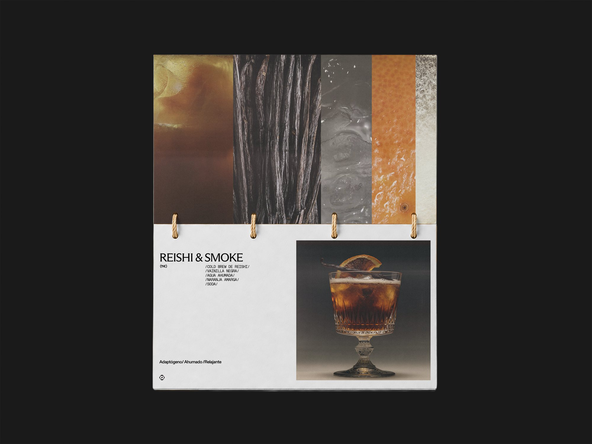
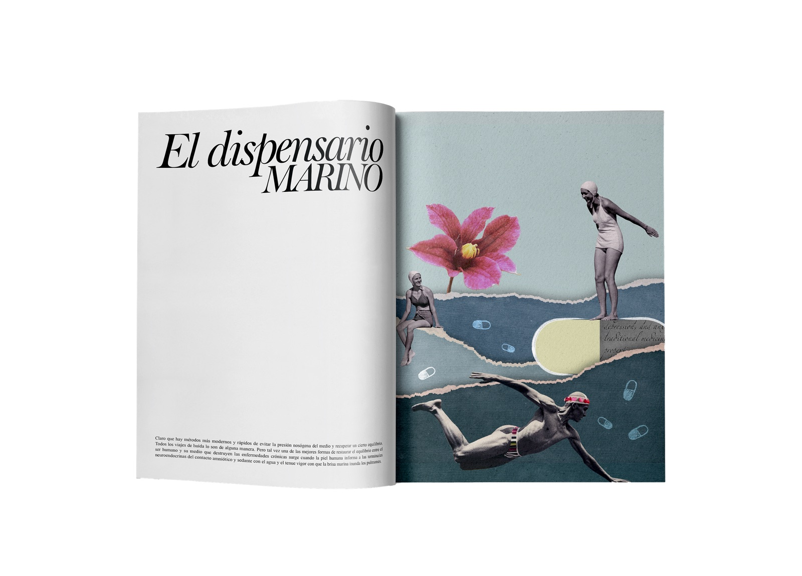
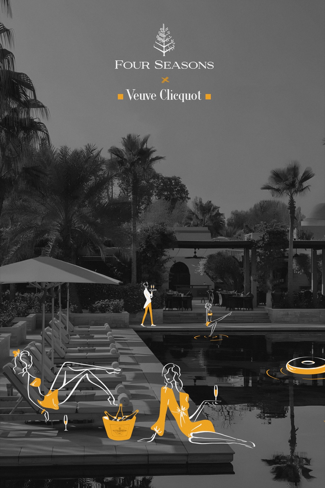
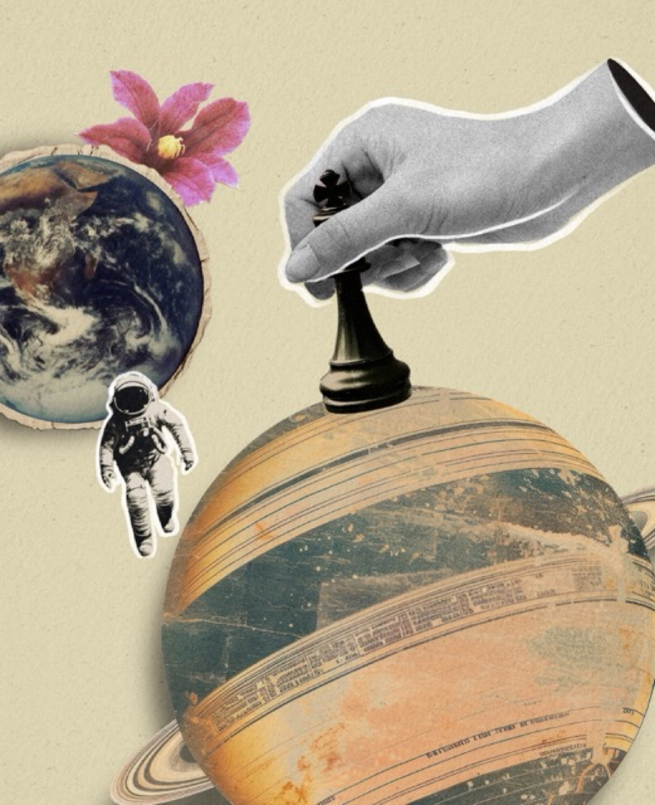

(06) Archivo
Proyectos
-
(001)
Soberana Madrid
2026 / Branding 360, impresión.
Branding · Identidad visual · Diseño editorial e impreso · Diseño web · Estrategia de comunicación
Mercado: España.
Público: Generación Z, millennials y público consciente de su salud.Soberana es un proyecto de branding para una coctelería premium sin alcohol que reposiciona el consumo 0,0 como un destino y no como una alternativa. El encargo incluyó estrategia de marca, naming y el diseño de una identidad visual que expresa el carácter contemporáneo y analógico de la marca a través de un sistema gráfico coherente en todos sus puntos de contacto.
Propósito/
Impulsado por el cambio en los hábitos de consumo, el mercado de bebidas sin alcohol no deja de crecer, mientras que la hostelería premium de Madrid aún no contaba con una marca capaz de liderar esta nueva categoría. Soberana nace para aprovechar esa oportunidad con una identidad estratégica que no solo redefine la experiencia del cóctel 0,0, sino que también promueve una relación más consciente con el alcohol.
Resultado/
El proyecto abarca el desarrollo completo de la marca, desde el naming y el posicionamiento estratégico hasta un sistema de identidad visual integral. El nombre, Soberana, juega con el doble sentido de sober (sobrio) y soberanía, mientras que el símbolo combina el corte transversal de un ingrediente botánico con el signo matemático del conjunto vacío: la ausencia de alcohol y la presencia de la naturaleza.
Dirección de arte/
La identidad no solo representa a la marca: le da presencia física. Crear una categoría nueva exigía ir más allá de los códigos visuales habituales de la coctelería. Inspirada en el diseño editorial, las publicaciones científicas y el packaging cosmético, la dirección de arte desarrolla un lenguaje visual definido por la sencillez, la precisión y la materialidad.
Activación de marca/
La estrategia de comunicación se construye sobre la idea central del proyecto: «Nadie te pregunta por qué bebes. Solo por qué no lo haces.» Esta idea se traduce en una serie de carteles tipográficos con preguntas que el público reconoce al instante de su propia experiencia. Más que lanzar un mensaje publicitario, la campaña refleja una realidad social cotidiana y crea un momento de reconocimiento que se convierte en el vínculo emocional entre el público y la marca.
Incluye identidad, redes sociales, prototipo de carta y campaña de carteles.




-
(002)
Passage Burberry
2026 / Packaging, desarrollo de concepto.
Identidad visual · Diseño impreso · Packaging · Desarrollo de conceptoPassage explora una posible extensión de Burberry al café de especialidad. Inspirado en la herencia de viaje y exploración de la marca, el proyecto desarrolla una colección de seis cafés de origen único y un sistema visual que convierte cada envase en una parada de un viaje editorial coleccionable.
Propósito/
El reto era llevar Burberry a una categoría ajena a su terreno habitual sin comprometer la autenticidad de la marca. En lugar de apoyarse en una tradición cafetera que no existe, el proyecto parte del legado de viaje y exploración de Burberry —su icónica gabardina se diseñó para el movimiento— para presentar el café de especialidad como un compañero de viaje y una extensión natural del universo de la marca.
Valor estratégico/
El proyecto demuestra cómo Burberry puede entrar en una nueva categoría sin comprometer su identidad. Al traducir su herencia expedicionaria en una experiencia de producto ritual y coleccionable, Passage genera un valor estratégico que va más allá del propio producto.
Dirección de arte/
El lenguaje visual se construye sobre un sistema editorial en el que la tipografía vertical a gran escala define la colección. Cada café de origen se distingue por su propio degradado cromático, mientras que el motivo del Caballero Ecuestre y el azul Klein aportan coherencia y reconocimiento a través de detalles inspirados en el patrón Nova Check, el sistema tipográfico y el emblema de la marca.
Seis orígenes: Estocolmo, Adís Abeba, Nápoles, Estambul, Hanói y Kioto.


-
(003)
Editorial Specimen
2025 / Editorial, dirección creativa.
Diseño editorial · Diseño impreso · Dirección creativa · Exploración creativa · Trabajo en equipo
Seleccionado en ADG Laus Awards / InBook 2026.Specimen trata los objetos cotidianos como especímenes de observación. Cada volumen combina documentación, análisis e interpretación creativa para descubrir el valor de diseño que se esconde en lo ordinario.
Propósito/
Publicación editorial dedicada a explorar y reinterpretar objetos cotidianos. Cada volumen examina un único objeto corriente a través de documentación técnica, contexto histórico y reinterpretación artística, y revela la complejidad de lo que a menudo pasa desapercibido.
Valor estratégico/
Specimen funciona a la vez como plataforma editorial para artistas y diseñadores y como una puerta de entrada accesible a la cultura del diseño. Cada número cuestiona el papel convencional de la publicación al integrar el objeto protagonista en el propio artefacto editorial, difuminando el límite entre tema y soporte.
Dirección creativa/
Inspirado en la noción científica de espécimen, el proyecto adopta la observación y el análisis como marco editorial. Dos tipos de papel distinguen la capa analítica de la interpretativa, y la maqueta prescinde a propósito de una retícula rígida: el sistema editorial se adapta al contenido y crea un espacio flexible para la exploración, la experimentación y el juego visual.


-
(004)
Bodega Borne
2026 / Identidad visual, packaging.
Identidad visual · Diseño impreso · Packaging · Desarrollo de concepto
Mercado: España. Internacional.
Categoría: vino premium.
Público: consumidores de alta gama, coleccionistas de vino; un público curioso, exigente y atento a la calidad.Borne es un proyecto integral de branding y packaging para una bodega ficticia de la Denominación de Origen Toro. El encargo incluyó naming, estrategia de marca, desarrollo conceptual y el diseño de un sistema de identidad visual coherente aplicado a una colección de tres vinos.
Propósito/
Crear una marca de bodega premium dentro de la D.O. Toro, junto con una colección de tres vinos respaldada por una identidad visual propia y coherente. En lugar de recurrir a los códigos visuales habituales de la región, el proyecto parte de uno de sus activos más excepcionales: sus cepas centenarias prefiloxéricas. De esa herencia nace Postrero, una colección de tres vinos diferenciados por la edad de la cepa (50, 80 y más de 100 años), donde la rareza la define el origen y no la producción.
Desarrollo de concepto/
El proyecto se construye sobre dos ideas fundamentales: el lugar y el tiempo. Borne representa el territorio, y Postrero alude a la última etapa en la vida de una cepa. Juntos establecen los cimientos conceptuales de la marca y definen su relato.
Dirección de arte/
La identidad se articula en torno a una forma geométrica inspirada en un reloj de arena. El color y los acabados nacen directamente del concepto, de modo que cada vino comunica el paso del tiempo sin necesidad de texto explicativo. La secuencia bronce, plata y oro establece una jerarquía temporal, mientras que la paleta de colores planos traduce el perfil aromático de cada vino en un lenguaje visual claro.
Valor estratégico/
El proyecto redefine el lujo al situar la edad de la cepa como medida de la rareza. Un sistema cromático derivado de datos enológicos reales convierte la información técnica en lenguaje visual y elimina la necesidad de jerarquías tipográficas o elementos decorativos. El color se convierte en el principal portador de significado, y el resultado es un sistema de identidad cuya contención es precisamente lo que le da claridad, fuerza y escalabilidad.


-
(005)
Velzia Group
2026 / Editorial, impresión.
Diseño editorial · Diseño impreso · Dirección de arte · Comunicación y redes socialesDiseño editorial y comunicación visual para Velzia Group, trasladando el posicionamiento premium de la marca a piezas editoriales impresas y digitales. El trabajo abarca diseño de publicaciones, narrativa visual y la implantación de flujos de trabajo con IA generativa para agilizar la producción sin perder una dirección de arte coherente.
Rol/
Trasladar la artesanía y la calidad premium de los proyectos de reforma de Velzia a experiencias editoriales, diseñando publicaciones para clientes y comunicación visual para las marcas del grupo. El rol incluye también la creación de piezas para la marca de mobiliario y decoración del grupo, diseñada en Madrid y distribuida a través de su tienda online, así como la preparación de artes finales y archivos de producción para imprenta.
Libro de Tendencias · Propósito/
Desarrollo de una publicación editorial que organiza y comunica cinco estilos de interiorismo a través de un sistema visual coherente. La guía combina diseño editorial, tipografía, jerarquía y dirección de imagen para crear una referencia práctica tanto para los clientes como para el equipo de diseño.
Libro de Tendencias · Valor estratégico/
El resultado es una herramienta editorial premium que agiliza la toma de decisiones y amplía los activos de marca de Velzia. Pensada para acompañar a los clientes durante el proceso de diseño, la guía refuerza la presentación de los servicios del estudio y ofrece un marco coherente para comunicar su enfoque. La integración de IA generativa en la producción redujo de forma notable tiempos y costes sin comprometer la calidad visual de la publicación.
Redes sociales · Propósito/
Crear una identidad en redes sociales que extienda la experiencia de marca más allá del propio producto. Mediante creación de imagen asistida por IA, composición y retoque digital, el mobiliario real se sitúa en interiores aspiracionales, y cada producto individual pasa a formar parte de un relato visual coherente pensado para la venta online.
Redes sociales · Valor estratégico/
El sistema de contenidos resultante reforzó la calidad percibida de la marca y permitió un proceso de producción escalable. Con las redes sociales como principal punto de contacto con el cliente, el proyecto maximizó la producción y la coherencia de los contenidos sin necesidad de costosas sesiones de fotografía ni renders 3D.


-
(006)
(Otras) piezas gráficas
Exploraciones de impresión · Exploraciones tipográficas · Exploraciones de retícula · Exploraciones gráficasUna selección de piezas sueltas: carteles, ilustración y pruebas de impresión, tipografía y retícula.
Incluye carteles para el Día Mundial de la Alimentación, la campaña 50 Pants. 50 Days para Egoísta, cartelería para Zsongo e ilustraciones para Four Seasons × Veuve Clicquot.






(06) Archive
Projects
-
(001)
Soberana Madrid
2026 / Branding 360, print.
Branding · Visual identity · Print design · Web design · Communication strategy
Market: Spain.
Target audience: Generation Z, millennials and wellness-conscious audiences.Soberana is a branding project for a premium mocktail bar that repositions non-alcoholic consumption as a destination rather than an alternative. The scope included brand strategy, naming, and the design of a visual identity that expresses the brand’s contemporary and analogue character through a coherent graphic system across all touchpoints.
Purpose/
Driven by changing consumer habits, the non-alcoholic beverage market continues to grow, while Madrid’s premium hospitality scene has yet to establish a brand capable of leading this emerging category. Soberana was developed to address this opportunity through a strategic brand identity that not only redefines the 0.0 cocktail experience but also promotes a more conscious approach to alcohol consumption.
Outcome/
The project encompasses the complete development of the brand, from naming and strategic positioning to the creation of a comprehensive visual identity system. The name, Soberana, plays on the dual meaning of sober and sovereignty, while the symbol combines the cross-section of a botanical ingredient with the mathematical symbol for the empty set, representing both the absence of alcohol and the presence of nature.
Art direction/
The identity does more than represent the brand, it gives it physical presence. Establishing a new category required moving beyond the visual conventions traditionally associated with cocktail culture. Drawing inspiration from editorial design, scientific publications, and cosmetic packaging, the art direction developed a visual language defined by simplicity, precision, and materiality.
Brand activation/
The communication strategy is built around the project’s central insight: “No one asks why you drink. They only ask why you don’t.” This idea is translated into a series of typographic campaign posters featuring questions the target audience instantly recognizes from their own experience. Rather than delivering an advertising message, the campaign reflects a familiar social reality, creating a moment of recognition that becomes the emotional connection between the audience and the brand.
Includes identity, social media, menu prototype and poster campaign.
-
(002)
Passage Burberry
2026 / Packaging, concept development.
Visual identity · Print design · Packaging · Concept developmentPassage explores a potential extension of Burberry into the specialty coffee category. Inspired by the brand’s heritage of travel and exploration, the project develops a collection of six single-origin coffees and a visual system that transforms each package into a stop along a collectible editorial journey.
Purpose/
The challenge was to extend Burberry into a category beyond its traditional domain without compromising the brand’s authenticity. Rather than relying on a non-existent coffee heritage, the project draws on Burberry’s legacy of travel and exploration, as its iconic trench coat was originally designed for movement, to position specialty coffee as a travelling companion and a natural extension of the brand’s universe.
Strategic value/
The project demonstrates how Burberry can extend into a new category without compromising its identity. By translating its expeditionary heritage into a ritualistic and collectible product experience, Passage creates strategic value beyond the product itself.
Art direction/
The visual language is built around an editorial system in which large-scale vertical typography defines the collection. Each single-origin coffee is distinguished by its own chromatic gradient, while the Equestrian Knight motif and Klein Blue provide consistency and recognition through details inspired by the Nova Check pattern, the typographic system, and the brand’s emblem.
Six origins: Stockholm, Addis Ababa, Napoli, Istanbul, Hanoi and Kyoto.
-
(003)
Editorial Specimen
2025 / Editorial, creative direction.
Editorial design · Print design · Creative direction · Creative exploration · Team work
Selected for ADG Laus Awards / InBook 2026.Specimen treats everyday objects as specimens for observation. Each volume combines documentation, analysis, and creative interpretation to uncover the design value hidden within the ordinary.
Purpose/
Editorial publication dedicated to the exploration and reinterpretation of everyday objects. Each volume examines a single ordinary object through technical documentation, historical context, and artistic reinterpretation, revealing the complexity of what often goes unnoticed.
Strategic value/
Specimen operates as both a publishing platform for artists and designers and an accessible introduction to design culture. Each issue challenges the conventional role of the publication by integrating the featured object into the editorial artefact itself, blurring the boundary between subject and medium.
Creative direction/
Inspired by the scientific notion of a specimen, the project adopts observation and analysis as its editorial framework. Two paper stocks distinguish the publication’s analytical and interpretative layers, while the layout is intentionally free from a rigid grid. Instead, the editorial system adapts to the content, creating a flexible space for exploration, experimentation, and visual play.
-
(004)
Bodega Borne
2026 / Visual identity, packaging.
Visual identity · Print design · Packaging · Concept development
Market: Spain. International.
Category: premium wine.
Target audience: high-end consumers, wine collectors; curious, discerning and quality-conscious audiences.Borne is a comprehensive branding and packaging project for a fictional winery under the Toro Designation of Origin. The scope included naming, brand strategy, conceptual development, and the design of a cohesive visual identity system applied to a collection of three wines.
Purpose/
Develop a premium winery brand within the Toro Designation of Origin, together with a three-wine collection supported by a distinctive and cohesive visual identity. Rather than relying on the region’s conventional visual codes, the project is rooted in one of Toro’s most exceptional assets: its century-old pre-phylloxera vines. This heritage gave rise to Postrero, a collection of three wines differentiated by vine age (50, 80 and 100+ years), where rarity is defined by origin rather than production.
Concept development/
The project is built around two fundamental ideas: place and time. Borne represents the territory, while Postrero refers to the final stage in the life of a vine. Together, they establish the conceptual foundations of the brand and define its narrative.
Art direction/
The identity is built around a geometric form inspired by an hourglass. Colour and material finishes emerge directly from the concept, allowing each wine to communicate the passage of time without relying on explanatory text. The bronze, silver, and gold sequence establishes a temporal hierarchy, while the solid colour palette translates the aromatic profile of each wine into a clear visual language.
Strategic value/
The project redefines luxury by positioning vine age as the measure of rarity. A colour system derived from real oenological data transforms technical information into a visual language, removing the need for typographic hierarchies or decorative graphic elements. Colour becomes the primary carrier of meaning, resulting in an identity system whose restraint is precisely what gives it clarity, strength, and scalability.
-
(005)
Velzia Group
2026 / Editorial, print.
Editorial design · Print design · Art direction · Communication & social mediaEditorial design and visual communication for Velzia Group, translating the brand’s premium positioning into printed and digital editorial assets. The work spans publication design, visual storytelling, and the implementation of generative AI workflows to enhance production while maintaining a consistent art direction.
Role/
Translate the craftsmanship and premium quality of Velzia’s renovation projects into editorial experiences, designing client-facing publications and visual communication across the group’s brands. The role also includes the development of creative assets for the group’s furniture and home décor brand, designed in Madrid and distributed through its online store, as well as the preparation of print-ready artwork and final production files.
Trend Book · Purpose/
Development of an editorial publication that organises and communicates five interior design styles through a consistent visual system. The guide combines editorial design, typography, hierarchy, and image direction to create a practical reference for both clients and the design team.
Trend Book · Strategic value/
The outcome is a premium editorial tool that streamlines decision-making while expanding Velzia’s brand assets. Designed to support clients throughout the design process, the guide strengthens the presentation of the studio’s services and provides a consistent framework for communicating its design approach. The integration of generative AI into the production workflow significantly reduced time and costs without compromising the publication’s visual quality.
Social media · Purpose/
Create a social media identity that extends the brand experience beyond the product itself. Through AI-assisted image creation, compositing, and digital retouching, real furniture is placed within aspirational interior settings, transforming individual products into a cohesive visual narrative optimised for online retail.
Social media · Strategic value/
The resulting content system strengthened the brand’s perceived quality while enabling a scalable production process. With social media acting as the brand’s main customer touchpoint, the project maximised content output and consistency without the need for costly photography or 3D rendering.
-
(006)
(Other) Graphic Pieces
Print explorations · Type explorations · Grid explorations · Graphic explorationsA selection of standalone pieces: posters, illustration, and print, type and grid explorations.
Includes posters for World Food Day, the 50 Pants. 50 Days campaign for Egoísta, posters for Zsongo, and illustrations for Four Seasons × Veuve Clicquot.